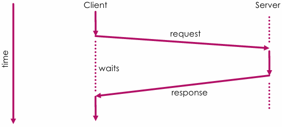
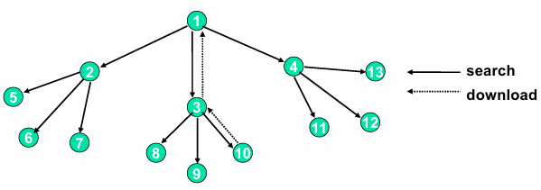
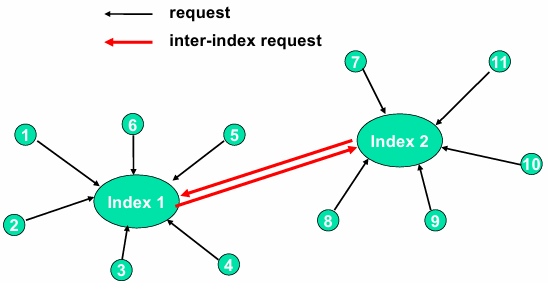
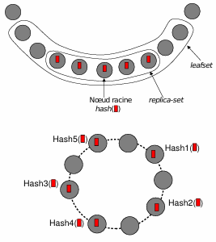
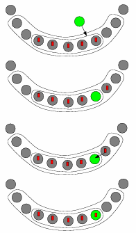
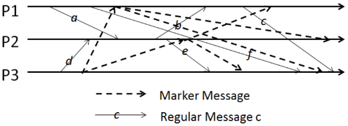
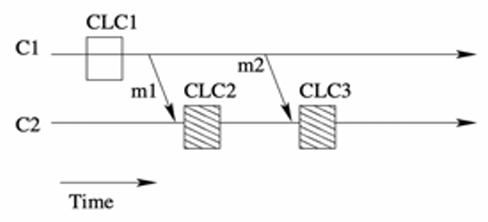

INFO833 - Systèmes distribués à large échelle
Introduction
Principes des systèmes distribués
- Problèmes :
- Dynamisme (hardware / software) : pannes, ajout de ressources, ...
- Localisation et allocation des ressources : où exécuter une tâche ?
- Concurrence : partage de ressources, accès concurrents, ...
- Asynchronisme : ordre des événements, ...
- Objectifs :
- Résilience/disponibilité : tolérance aux pannes, ...
- Transparence : l'utilisateur n'a pas besoin de savoir où est exécutée une tâche ou comment est stockée une ressource
- Efficacité : performance, scalabilité, ...
- Ouverture (Pour permettre de collaborer)
- Scalabilité (capacité à s'adapter à une augmentation de charge)
- Obstacles :
- Le réseau doit être fiable (pas de perte de paquets (accusé de réception))
- Le réseau doit être sécurisé
- Le réseau doit être homogène (tout le monde doit recevoir les mêmes informations)
- La topologie ne doit pas changer
- La latence doit être nulle
- La bande passante doit être infinie
- Le coût de transport doit être nul
- Il ne doit y avoir qu'un administrateur
Histoire
- Années 60 : premiers clusters de machines
- 1985 : Micro-processors et réseaux haute-vitesse ⇒ permet les premiers systèmes distribués
- Années 90 : Grid computing
- Années 2000 : Datacenters
- 2006-2010 : Explosion du cloud
- 2020 : Edge/Fog computing (edge : faire du calcul au plus proche de l'utilisateur (dans un smartphone, une box, un radiateur) et fog : mélange de cloud et edge)
- Aujourd'hui : SmartNIC (Network Interface Card)
Défition
Un système distribué est un ensemble de machines indépendantes qui apparaissent à l'utilisateur comme un seul système cohérent.
Caractéristiques :
- Multiples composants autonomes : chaque machine a son propre processeur, mémoire, disque, ...
- Des ressources pourraient ne pas être disponibles : s'organiser en prévoyant qu'il puisse y avoir des défaillances
- Processus concurrents
- Plusieurs points de contrôle
- Plusieurs points de défaillance
Client / Serveur
C'est le comportement standard sur Internet.

Configurations possibles
- 1 serveur et N clients
- M serveurs et 1 client
- M serveurs et N clients
- Un serveur peut aussi être un client
Limitations
- Passage à l'échelle : le serveur peut être surchargé
- Tolérance aux pannes : si le serveur tombe, tout le monde tombe
Réseaux peer-to-peer
Tout le monde peut être client ou serveur :
- Avantages en scalabilité et en fiabilité (reliability)
- Différentes topologies (plate, anneau (DHTs), hiérarchique)
Fonctionalités
- Dynamicité :
- Découverte dynamique de pairs et ressources : Comment on sait où se trouve un fichier particulier sachant qu'on ne connait que quelques voisins ?
- Scalabilité : Plus il y a de pairs, plus le réseau est performant
- Disponibilité : Les pairs sont interchangeables (replication)
Comment faire avec une vue locale du réseau ?
→ Le réseau P2P construit un overlay (réseau logique de "qui connait qui ?")
Répertoire central
- Un serveur central qui connaît tout le monde
- Le cout de la recherche est faible
- Réponse exacte
- On peut faire des requêtes complexes (à plusieurs attributs)
- MAIS faible tolérance aux pannes (si le serveur tombe, tout le monde tombe)
- Les solutions pour contourner ça (workarounds) sont coûteuses
- Ça va à l'encontre de la philosophie du P2P
- Pas d'overlay, pas de graphe à maintenir
- Exemple : Le premier système P2P (Napster) avait un server central
Flooding
-
Chaque pair envoie la requête à tous ses voisins
 -
Caractéristiques :
- Haute tolérance aux pannes
- Couteux en nombre de messages
- Réponses partielles (Des fois on ne trouve pas le fichier parce qu'il faut faire plus de sauts que ce qu'on a choisi comme maximum)
-
Exemple : GNutella
Approche hybride
-
On a des super-peers qui connaissent tous les pairs autour d'eux et qui se connaissent entre eux.
-
Caractéristiques :
- Nombre réduit de messages (comparé au flooding)
- Meilleure tolérance aux pannes (comparé au répertoire central)
- Réponses partielles (comme le flooding)
- La détection de super-peers est un problème

Distributed Hash Tables (DHTs)
Le vrai problème du P2P est de trouver une ressource dans un réseau distribué
- API simple :
get(key),put(key, value) - Recherche de donnée efficace
- Mécanisme de healing (si un pair tombe, on peut le remplacer)
- Résistance au churn (les pairs qui se connectent et se déconnectent)
Principes
-
Chaque pair a un identifiant unique : anneau logique ou key-based routing (KBR)
-
Chaque donnée a un identifiant unique :
-
Il y a toujours un noeud responsable de chaque donnée (si on s'en va, on doit donner la responsabilité à quelqu'un d'autre)
-
Le plus proche voisin est celui qui a l'identifiant le plus proche
-
Les voisins les plus proches font partie du leafset
-
Bonne distribution de la charge/pas d'index (localisation implicite)
Avantages
-
Approche 100% distribuée : pas de serveur central
-
Localisation efficace et exacte
-
Equilibre de charges
-
Très bonne scalabilité : il faut log(n) sauts pour trouver une donnée
-
MAIS si on veut faire des range queries (par exemple, trouver toutes les données entre 2 bornes), c'est plus compliqué
Placement des données
- Deux solutions principales :
- Contiguous : on place les données de manière contiguë (comme un anneau)
- Non-contiguous : la donnée est répartie de manière aléatoire parmi les pairs

- L'insersion de donnée est plus simple dans le cas non-contiguous
- Il faut déplacer des données à chaque ajout/suppression de pair dans le cas contiguous (un déplacement peut être très coûteux)

Localisation des données dans un système P2P
- Centralisé :
+ Nombre de messages
+ Réponse exacte
- Tolérance aux pannes - Flooding :
+ Tolérance aux pannes
- Nombre de messages
- Réponse exacte - Hybride :
+ Nombre de messages
+ Tolérance aux pannes
- Réponse exacte - DHTs :
+ Nombre de messages
+ Tolérance aux pannes
+ Réponse exacte
- Requêtes complexes
Propriétés des réseaux P2P
-
Basés sur les overlay networks : réseau logique construit par dessus le réseau physique ("qui connait qui ?") ⇒ Si chaque noeud connait ses voisins, ça forme un graphe
-
Besoin de redondance (plusieurs chemins entre deux points) pour la tolérance aux pannes
-
Besoin de liens spécifiques (notamment entre les super-peers, les noeuds qui communiquent le plus...)
-
Topologies d'overlay :
- Graphes aléatoires
- Graphes complets
- Guidée par l'application (exemple : Solipsis, un monde virtuel où les noeuds sont proches s'ils sont proches dans le monde virtuel)
- Anneaux/grid/tors/hypercubes...
- Hiérarchiques
- Multi-overlay (plusieurs overlay pour différentes fonctions (exemple : un overlay pour la proximité géographique et un autre pour la proximité des contacts de téléphone dans un jeu vidéo))
-
Objectif :
- Tous les noeuds doivent être connectés au moins une fois
- Le diamètre du graphe doit être petit (le nombre de sauts minimal pour aller d'un point à un autre doit être petit ⇒ Propriété de petit monde)
- Les liens doivent être application-aware (les liens sont choisis en fonction de l'application)
- Les liens doivent prendre en compte le réseau physique (éviter de faire 18 allers-retours entre la France et l'Australie pour trouver une donnée)
- Routing basé sur des clés (KBR)
-
Opérations :
- Arrivée de nouveaux noeuds
- Départ de noeuds (avec ou sans avertissement)
- Maintenance de l'overlay
- Être capable de trouver une donnée
Tolérance aux fautes
Fautes
Différents types de fautes
- Crash : La machine a cramé, elle est plus là, c'est ff
- Crash recovery : La machine a cramé mais elle pourrait revenir
- Problème : on revient avec une donnée qui n'est plus à jour, et en plus elle a été déplacée lors du crash...
- Solution : on demande à la machine d'oublier la ressource, c'est plus elle qui la gère
- Omissions : La machine agit selon ses spécifications mais pas tout le temps (perte de message)
- Byzantine : La machine fait n'importe quoi
- Solution : On multiplie les requêtes pour être sûr de la réponse en moyenne
Il faut savoir que les crashs sont des omissions, qui sont des byzantines (Crash (/recovery) < Omission < Byzantine)
Conséquences des fautes
- Perte de données
- Perte du calcul (s'il n'a pas enregistré son état)
- Deadlock (si un noeud attend une réponse qui ne viendra jamais)
- Incohérences (si on recrée un jeton alors que le précédent n'a pas été détruit)
- Security hole
Détection des fautes
- Lazy : Si on ne reçoit pas de réponse, on considère que le noeud est mort
- Heartbeat : On envoie un message régulièrement pour dire qu'on est vivant
- Ping : On demande aux autres noeuds s'ils sont vivants régulièrement
Scalabilité
Plus il y a de noeuds, plus il y a de chances qu'un noeud tombe.
- Hiérachique : Partition des noeuds en groupes, monitoring local (all-to-all) ou global (one-to-one)
- Probabiliste : On ping aléatoirement des noeuds à chaque round (et on fait parcourir la liste des suspects)
- Anneau
- Overlay pair-à-pair : chacun surveille ses voisins
Détection des fautes
Crashes
On utilise le heartbeat ou ping pour détecter d'eventuels timeouts mais c'est compliqué de savoir si c'est un crash ou un délai élevé...
Omissions
On peut détecter et corriger des omissions en utilisant des :
- Messages numérotés
- Acknowledgements
- Re-émission
Solution généralement utilisée, la redondance
- Pour les données : on a plusieurs copies de la même donnée
- Pour les calculs : on a plusieurs noeuds qui font le même calcul (réplication)
- Pour les communications : on fait des checkpoints/restart (on sauvegarde l'état du noeud régulièrment)
Checkpointing
Rollback-recovery
Checkpointing : On sauvegarde l'état de la mémoire d'un processus de manière à pouvoir le restaurer plus tard
Dans un cas à plusieurs processus (communication), il faut que tout le monde rollback vers le même état (sinon ça ne sert à rien)
Pour réduire le coût du checkpointing :
- on peut ne sauvegarder que les données qui ont changé depuis le dernier checkpoint.
- on peut faire des checkpoints quand l'empreinte est faible (quand il n'y a pas beaucoup de messages en attente)
Effet domino
Si un noeud rollback, il faut que tous les noeuds qui ont reçu un message de ce noeud rollback aussi. Ça peut entrainer une réaction en chaine qui renvoie le système l'état initial. L'idéal pour éviter ça est de faire un checkpoint global de temps en temps, pour faire une ligne de recouvrement (recovery line : un état global dans lequel il n'y a pas de message reçu sans avoir été émis précédemment)

Types de checkpoints
Checkpointing non-coordonné :
Chaque noeud fait ses propres checkpoints mais il faut tout synchroniser parfois pour éviter l'effet domino.
- Objectif : Trouver la ligne de recouvrement la plus récente.
- On cherche un graphe de dépendance directe entre les checkpoints (chaque processus se rappelle de qui il dépend, càd de qui il a reçu un message).
- Récupération :
- Envoi d'une requête.
- Collecte du graphe de dépendances local.
- Calculer la ligne de recouvrement.
- Restaurer les états depuis les checkpoints.
Checkpointing coordonné :
Un noeud est désigné pour dire à tout le monde de faire un checkpoint. C'est plus simple mais ça peut être un point de défaillance.
-
Avanatage : il ne faut stocker qu'un seul checkpoint par noeud.
-
Processus :
- Un coordinateur broadcast une requête de checkpoint.
- Dès qu'un noeud reçoit la requête, il envoie un "checkpoint ready" au coordinateur.
- Dès que le coordinateur a reçu tous les "checkpoint ready", il envoie un "checkpoint do" et tout le monde fait un checkpoint et envoie "checkpoint done" au coordinateur.
- Quand le coordinateur a reçu tous les "checkpoint done", il envoie "checkpoint commit" pour faire redemarrer tous les processus en cours.
-
Problème : ça stoppe tout le monde pendant un moment.
-
Algorithme de Chandy-Lamport :
Permet de faire un checkpoint global sans arrêter le système (non-bloquant)- Le processus observateur (celui qui initie la prise d'état) enregistre son état courant et envoie une requête qui contient un "marqueur d'état" à tous les autres processus.
- Un processus qui reçoit un "marqueur d'état" pour la première fois envoie son état courant au processus observateur et ajoute à chaque message un "marqueur d'état" pour aider à la propagation.
- Lorsqu'un processus ayant déjà effectué sa prise d'état reçoit un message qui n'a pas de marqueur d'état, il le transmet tel quel à l'observateur (car il doit quand même être pris en compte comme il a été envoyé avant la prise d'état globale).
Schéma : Ici, P3 est l'observateur et P1 et P2 sont les processus qui envoient leur état à P3.

Jounalisation (Logging) :
On écrit tout ce qu'il se passe dans une sorte de journal. Si un noeud tombe, on peut rejouer le journal pour retrouver l'état du système sans déranger les autres.
Piecewise deterministic (PWD) (déterministe par morceaux) :
- Certaines parties de l'application sont deterministes (on peut les rejouer)
- On ne journalise que les parties non-deterministes (les entrées/sorties, les messages reçus, ...)
Deux approches :
- Pessimiste : on journalise tous les messages reçus et on détecte les ré-émissions.
- Optimiste : on journalise les messages reçus en mémoire et on les écrit périodiquement sur un stockage stable (effet domino possible).
Communication induced :
- Utilisation de checkpoints non-coordonnés + de checkpoints forcés
- Les checkpoints forcés limitent l'effet domino.
- Pour réduire le nombre de checkpoints, on utilise un Direct dependancy vector (DDV) qui a :
- Une entrée par noeud,
- Chaque noeud incrémente son propre numéro de séquence at chaque checkpoint.
- Quand un message est reçu, on vérifie si un checkpoint devrait être forcé (si le numéro de séquence de l'envoyeur est plus grand que le numéro de séquence du noeud qui l'a reçu)
Schéma : ici, C1 ne change pas son numéro de séquence car il ne reçoit pas de message. C2 change le sien une première fois puis une deuxième fois + checkpoint forcé quand il reçoit le second message de C1.

pas super compris cette partie 😦
Broadcasting
Définition et motivation
Un broadcast est une opération où un processus envoie un message à tous les autres processus d'un groupe.
Sert beaucoup dans les communications parallèles (all-to-all par exemple) et pour les services de réplication (pour que tout le monde ait la même donnée).
Primitive de broadcast :
- Le même message doit être envoyé à tous les membres du groupe (expéditeur inclus)
- Le nombre de membres et leur identité doivent rester cachés.
- Primitive transparente : on ne se préoccupe pas de savoir qui est dans le groupe, ni qui ils sont.
Deux types de group membership :
- Statique : le groupe est fixe.
- Dynamique : les membres peuvent rejoindre le groupe ou le quitter.
Problèmes :
- Les processus peuvent crash (aussi pendant le broadcast)
- L'ordre des messages peut être différente selon les noeuds (la latence peut varier)
- Solution possible :
- Ajout d'une garantie pour que chaque message soit bien délivré
- Ajout d'une garantie pour l'ordre.
Diffusion inter-processus :
- Communications point-à-point : chaque processus envoie un message à un autre processus.
- Un processus peut échouer (fail-stop model), ils sont soit "correct" soit "faulty" pendant l'exécution.
Propriétés d'un broadcast
- Garanties de livraison : best-effort, reliable broadcast, uniform reliable broadcast.
- Garanties d'ordre : FIFO, causal, total.
Toutes les combinaisons de ces propriétés sont possibles.
Best-effort broadcast
Chaque processus correct (qui ne crash pas) a délivré le message si l'envoyeur est correct.
Reliable broadcast
Si l'envoyeur est correct, alors chaque processus correct délivre le message. Si l'envoyeur est faulty, alors soit tous les processus correct délivrent le message, soit aucun ne le délivre.
Chaque message est estampillé avec un numéro de séquence unique (l'identité de l'émetteur).
Algorithme :
Processus P :
seq#(m) : numéro de séquence
Variable locale : rec = ∅
Real_broadcast(m) :
estampiller m avec sender(m) et seq#(m) // envoyer m à tous les prcessus y compris P
upon-recv(m) do
if m ∉ rec then
rec ∪= {m}
if sender(m) != p then
envoeyr m à tous les processus sauf p
Real_deliver(m) // délivrer le message
Uniform reliable broadcast
Propriété uniforme : implique tous les processus, les correct et les faulty.
- Si un message m est délivré par un processus (correct ou faulty), alors tous les processus corrects vont éventuellement délivrer m.
- Si l'émetteur plante, alors le messgae ne pourra pas être délivré par contre, donc on peut utiliser des ACKs (je crois, on le verra en TD)
Garanties d'ordre de livraison
-
Ordre total : tous les processus délivrent le même set de messages dans le même ordre.
-
FIFO (pour une seule source uniquement le FIFO) : si un processus envoie m1 avant m2, alors tous les processus corrects délivrent m1 avant m2.
-
Ordre causal : si le broadcast m1 arrive causalement avant un autre broadcast m2, alors chaque processus correct qui délivre m2 devra d'abord délivrer m1. A chaque broadcast, on ajoute un vecteur d'horloge qui est incrémenté à chaque broadcast pour savoir si un message est causalement avant un autre.
L'ordre causal implique l'ordre FIFO (mais pas l'inverse).
Broadcasting à large échelle
Les mécanismes de broadcast ne scalent pas très bien, ils n'ont que des connaissances partielles du groupe, les groupes évoluent fréquemment et le broadcast prend du temps.
Gossiping (bavardage) : protocole de diffusion qui consiste à envoyer un message à des voisins aléatoires et à les faire propager à leur tour. C'est un protocole probabiliste qui converge vers une distribution uniforme des messages en général.
Réplication de données
Définition et motivation
- Fiabilité : durabilité et disponibilité des données
- Performance : latence et localisation des données, équilibrage de charge
Problèmes/défis :
- Combien de copies faire ?
- Où les stocker ? (data placement)
- Comment les localiser ? (data localization)
- Comment les maintenir (replication degree, distributed indexes...) ?
- Comment assurer la cohérence ?
Le data placement doit être :
- dirigé par le middleware
- fiable (fiabilité des noeuds, régénération (healing) des données)
- performant (patterns d'accès, synchronisation des données)
- dynamique (monitoring des accès aux données, de la résilience des noeuds (depuis combien de temps ils fonctionnent sans problème?)
La data localization peut avoir deux modèles :
- Fourni par l'overlay/le middleware/la topologie (DHT) : contraintes de placement, requêtes complètes mais performant
- Index distribués : contraintes de placements plus relachées, requêtes complexes plus faciles, besoin de maintenance
Récupérer des données
- Avec ou sans maintenance : Fountain code, lazy monitoring
- Guérir le système (créer des nouvelles copies pour remplacer les perdues) : Immédiatelment (ASAP) ou différée
- Que faire des fausses détections ?
Propagation des updates
- Single writer (ou writer qui possède un token)
- Multi-writer (avec des conflits possibles, donc il faut un mécanisme de résolution de conflits)
Evaluation des systèmes distribués à large échelle
Problèmes
Experience en temps réel :
- Besoin d'avoir des accès de nombreux noeuds distribués
- Besoin de prévoir le comportement des utilisateurs/des applications
- Cher
Solutions possibles
Construire des plateformes d'évaluation (émuler un grand nombre de noeuds, environnement controllé)
Utilisation de plateformes distribuées (émulation, virtualisation)
- Sites distribués géographiquement
- multiples entités virtuelles sur chaque machine physique
- outils d'émulation de réseau (ajout de latence, reduction de bandepassante, perte de paquets, ...)
Problemes : besoin d'y avoir accès, cher, difficile à utiliser/debug/reproduire
Simulation à évenement discret
L'idée c'est de ne pas utiliser le vrai code, mais de faire une simulationS
Le principe c'est d'avoir :
- un temps discret
- deux entités (nodes (machine/process/device/user...) et event (message, timer...))
- le temps progresse uniquement quand il y a un évenement
- chaque évenement a un label avec "qui est le recepteur" et "quand il doit arriver"
- à chaque instant, on regarde chaque évenement et on vérifie juste s'ils doivent être envoyés et à qui
Avantages :
- Faible temps de calcul
- possibilité d'enregistrer l'état du système (pour l'arreter et le restart)
- simulation reproductible
- possitilité de tricher
Inconvénients :
- c'est un modèle du système qui est evalué, pas le système lui-même
- peut etre plus lent que la réalité s'il y a beaucoup de noeuds/events
- difficile de choisir le bon niveau d'abstraction
- possibilité de tricher
Limiter l'impact sur la mémoire :
- Fusionner les protocoles
- Délivrer les messages à peu près à la bonne heure (pour en livrer plusieurs à la fois)
- Attention aux effets de bord